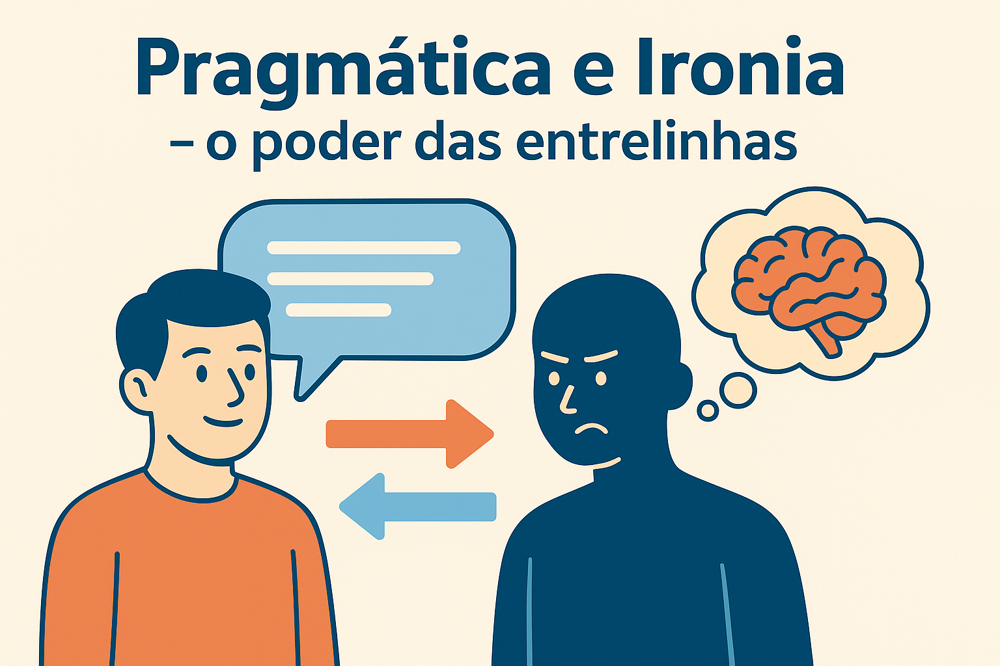

Pragmática e Ironia: o Sentido nas Entrelinhas
A pragmática é o ramo da Linguística que estuda como o contexto influencia a interpretação do sentido. Nem sempre o que se diz corresponde literalmente ao que se quer comunicar — e é justamente nesse espaço das intenções e das situações que surgem fenômenos como a ironia, o sarcasmo e o humor pragmático.
Ironia, sarcasmo e humor: diferenças essenciais
Embora estejam ligados à comunicação indireta, esses três recursos se diferenciam pelo tom e pela intenção comunicativa:
- Ironia: dizer o contrário do que se quer afirmar, com sutileza e criatividade. Exemplo: “Que ótimo, perdi o ônibus!” (o sentido real é negativo).
- Sarcasmo: é uma forma mais ácida e provocativa de ironia, com o objetivo de ridicularizar ou expor algo. Exemplo: “Nossa, que gênio você é por deixar o trabalho em casa!”
- Humor pragmático: depende da compreensão de contextos, trocadilhos e conhecimentos compartilhados, em que o riso surge da leitura nas entrelinhas.
Como identificar ironia ou sarcasmo
Reconhecer a ironia exige observar as pistas linguísticas e contextuais que revelam o distanciamento entre o que é dito e o que realmente se quer comunicar.
Pistas em textos escritos
- Contradições: entre o conteúdo da fala e a realidade descrita. Exemplo: “O trânsito está uma maravilha!” (quando há congestionamento).
- Exageros e hipérboles: que revelam a intenção de ironizar.
- Uso de aspas ou itálico: sinalizando um tom de distanciamento ou crítica. Exemplo: O “herói” do dia esqueceu o compromisso.
- Contexto discursivo: o conhecimento prévio sobre o tema ou o autor pode indicar ironia, mesmo sem pistas explícitas.
Pistas na linguagem oral
- Entonação: o tom de voz revela a intenção, especialmente quando contradiz o conteúdo literal.
- Pausas: criam expectativa ou marcam contraste entre o que é dito e o que se quer insinuar.
- Expressões faciais: sorrisos discretos, sobrancelhas arqueadas ou olhares podem denunciar ironia.
- Gestos corporais: complementam o sentido implícito, reforçando o tom humorístico ou sarcástico.
Ironia e humor em sala de aula
Trabalhar a ironia e o humor na escola é uma excelente forma de desenvolver a interpretação crítica e a competência comunicativa dos estudantes. Textos como charges, tirinhas, poemas e memes exploram essas figuras de linguagem de forma lúdica e reflexiva.
Exemplos práticos
- Tirinhas e charges: um personagem político afirma “Cumpri todas as promessas!”, enquanto o cenário mostra caos e insatisfação. A ironia nasce da contradição entre fala e imagem.
- Poesia: em “Poema de Sete Faces”, Carlos Drummond de Andrade ironiza a própria condição humana: “Quando nasci, um anjo torto / Desses que vivem na sombra / Disse: Vai, Carlos! ser gauche na vida.”
- Memes: nas redes sociais, o humor irônico depende do contexto cultural e do conhecimento compartilhado, exigindo leitura crítica.
“A ironia é a arte de dizer tudo sem precisar dizer nada.”
— reflexão sobre o poder do contexto
Atividade: explorando a ironia
Objetivo: identificar e analisar a presença da ironia e do humor em textos multimodais (tirinhas, memes, poemas, vídeos).
- Seleção: escolha uma tirinha, meme ou poema com elementos de ironia ou sarcasmo.
- Leitura contextual: descreva o contexto da situação e o efeito de sentido produzido.
- Análise linguística: identifique as expressões, pausas, gestos ou entonações que revelam o sentido implícito.
- Produção: crie uma pequena tirinha ou texto irônico sobre um tema cotidiano (escola, tecnologia, redes sociais).
Exemplo de tirinha em texto:
— Estudou para a prova?
— Claro! Assisti a três vídeos sobre procrastinação.
(Ironia: a fala contradiz o comportamento, gerando humor.)
Reflexão final
Compreender a ironia, o sarcasmo e o humor pragmático é compreender as sutilezas da linguagem e o papel do contexto na construção de sentidos. Esses recursos ampliam a capacidade crítica do leitor e mostram que a comunicação vai muito além das palavras. Na linguagem das entrelinhas, o riso e a reflexão caminham juntos.